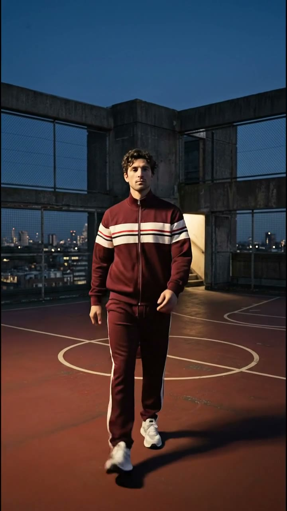
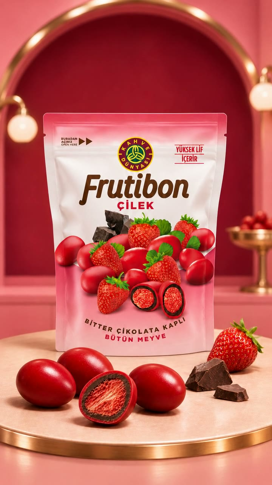
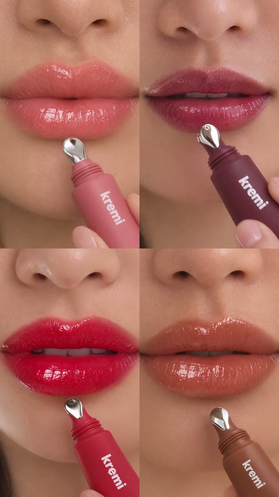
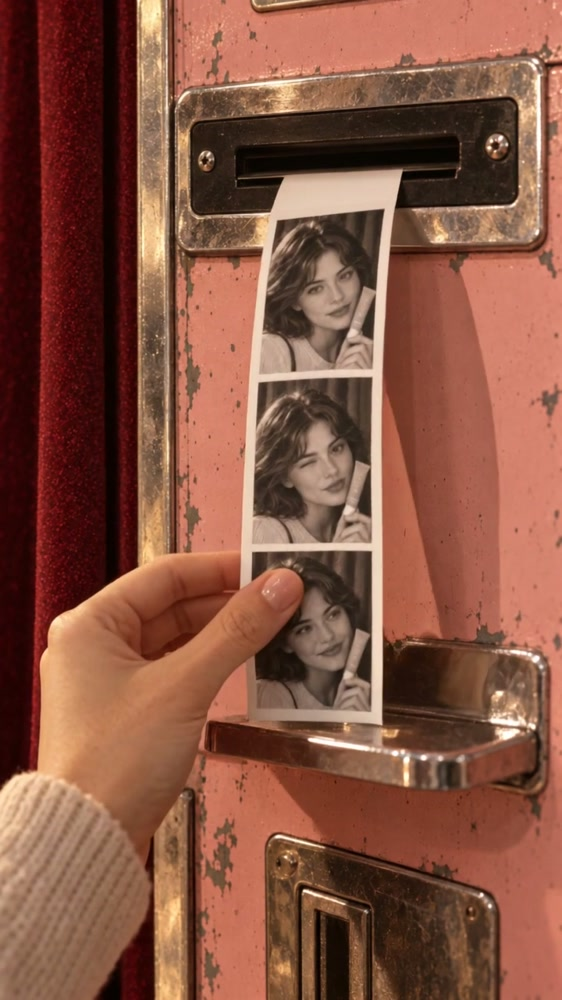
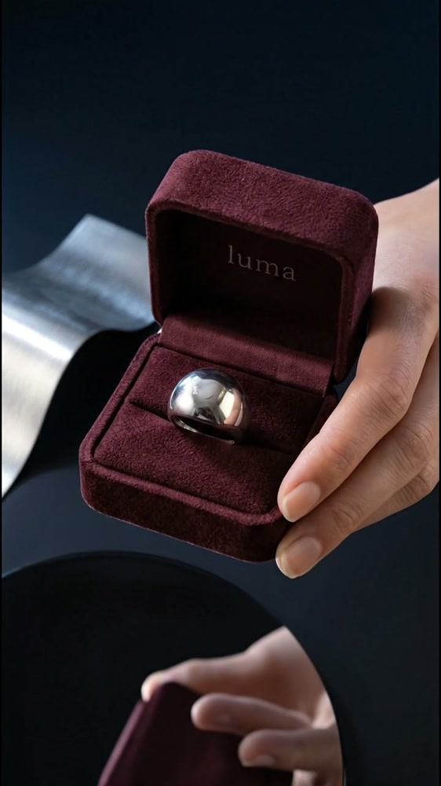
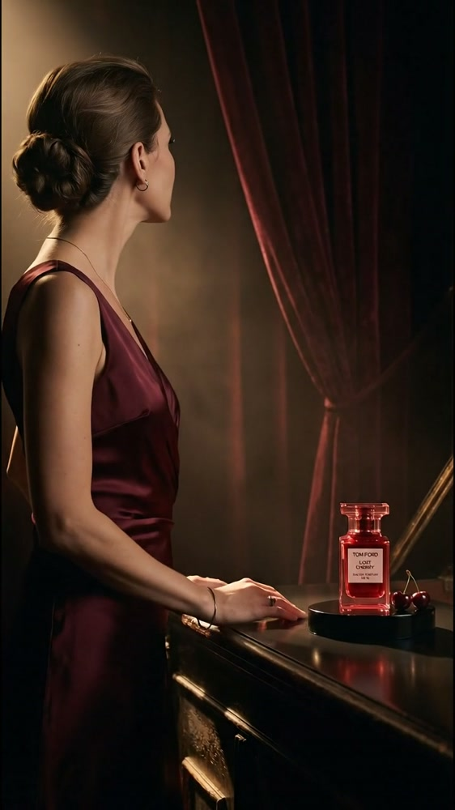

01
HAPPY TO WEAR
Gün değişir, ışıltın kalır.
AI moda / Kısa film Filmi izle · 15 snMON DIGITAL / AI DESTEKLİ YARATICI ÜRETİM
Markaların hikâyelerini AI destekli görsel ve film üretimiyle hayata geçiriyoruz. Yaratıcı fikirleri, markanın ruhunu taşıyan görüntülere dönüştürüyoruz.
Portfolyoyu gör01 / HAPPY TO WEAR · Moda filmi ↗ 02 / QUINZELL · Moda filmi ↗
02 / QUINZELL · Moda filmi ↗ 02 / QUINZELL · Renk değişimi ↗
02 / QUINZELL · Renk değişimi ↗Her hikâyeye kendine özgü bir dünya.
Neler üretiyoruz?
Moda filmiHayalet modelden kısa filmeAI filmÜrün ve marka hikâyeleriGerçek çekim + AIHibrit filmlerGörsel dünyaÜrün ve kampanya serileriPORTFOLYO / MODA
Ürününüzü model üzerinde, doğru mekânda ve ışıkta gösteren görseller ve kısa moda filmleri üretiyoruz.
Hayalet modelden, moda filmine.
AI moda / Hayalet model · Renk · VideoKoleksiyonunuzu hayalet model fotoğraflarıyla bize gönderin. Ürünü model üzerinde görselleştiriyor, renk alternatifleri geliştiriyor ve aynı görselleri kısa moda filmlerine dönüştürüyoruz.
Örnek 01 Lacivert-krem takım · Koşu bandında renk değişimi

Başlangıç: ürünün manken üzerindeki fotoğrafı.

Ürünü koleksiyonun ruhuna uygun bir modelde görselleştiriyoruz.


Aynı görünümden yeni seçenekler: çekim yapmadan, ürünün farklı yorumları.
Filmi izleGörseller harekete geçiyor: aynı ürün, kısa bir moda filminde.
Örnek 02 Şeritli eşofman takımı · Gece filmi



Filmi izleQUINZELL / UYGULAMA ÖRNEĞİ
Hayalet model fotoğraflarından model üzerinde ürün görselleri, renk çalışmaları ve video üretimi. Quinzell için bu adımları tek bir yaratıcı süreçte bir araya getirdik.
PORTFOLYO / FİLMLER
Bir ürünün detayından bir anın duygusuna,
farklı hikâyeler için tasarladığımız filmler.


Şehrin ritminde.
Filmi prodüksiyon ekibimizle İstanbul’da çektik; sette mümkün olmayan sahneleri AI ile ekledik.Hibrit film / Gerçek çekim + AI üretim · 34 snNasıl yaptık
 Filmi izle 16 sn
Filmi izle 16 sn

Filmi izle 15 sn

Filmi izle 20 sn

Filmi izle 12 sn

Filmi izle 40 sn

Filmi izle 40 snAI ile kurulan dünyalar, gerçek çekimle yakalanan anlar. Hikâyeye en iyi hizmet eden anlatımı arıyoruz.
PORTFOLYO / GÖRSEL DÜNYA
Ürünlerinizi doğru ışık, ortam ve hikâyeyle gösteren AI destekli görseller üretiyoruz. Ürün sunumundan kampanya serisine, ihtiyacınıza göre şekillenen içerikler hazırlıyoruz.
Sade ürün sunumları, detay planları ve kullanım sahneleri. E-ticaret, web sitesi ve sosyal medya için ürününüzün farklı yönlerini gösteren görseller.
Lansmanınız veya kampanyanız için ortak renk, ışık ve atmosfer taşıyan bir görsel dünya. Tek bir kareden birbiriyle uyumlu içerik serilerine.
Kampanya görsellerinizi gönderi, hikâye ve reklam alanlarına uygun düzenlemelerle hazırlıyoruz. Markanızın dili her formatta devam ediyor.

Çileğin dokusu, pembenin tonları ve nostaljik objeler. Ürün fotoğrafından yaşam tarzı sahnelerine uzanan ortak bir görsel dil.
Konsept marka çalışması · AI destekli görsel seri
Zeytinin rengi, yağın dokusu ve doğal ışık. Ürün detaylarını insan ve doğayla buluşturan bir kampanya serisi.
Konsept marka çalışması · AI destekli görsel seriKampanya görselleri, ürün sahneleri ve sosyal medya serileri.
Markanız nerede görünürse görünsün, aynı hikâyeyi anlatsın.
02 / HİZMETLER
Kampanya üretiminden aylık içeriğe; ihtiyacınıza göre birlikte çalışıyoruz.
Güzellik, parfüm, moda, takı, aksesuar ve paketli gıda için konsept, yapay zekâ destekli görsel üretim ve kısa reklam filmi.
Markanın dilini koruyan, planlı sosyal içerik ve kampanya üretimi. Her ay üret, yayınla, öğren ve sonraki aya aktar.
Ayrıca
Konumlandırma, içerik sütunları, dağıtım ve ölçüm; girişimler için değer önerisi ve lansman anlatısı. İster birlikte kuralım, ister ekibinize uygulamalı olarak öğretelim.
Marka bilgisi ve iş akışınıza göre araştırma, fikir geliştirme, içerik uyarlama ve operasyonu destekleyen yapay zekâ yardımcıları kurarız.
03 / YAKLAŞIM
Her projeye markayı tanıyarak başlıyoruz. Ne anlatmak istediğinizi ve izleyicide hangi duyguyu bırakmak istediğinizi birlikte keşfediyor; fikri, görüntüyü ve ritmi bu hikâyenin etrafında şekillendiriyoruz.
Markanızı farklı kılan detaylardan yola çıkıyor, söylemek istediğinizi bir fikre dönüştürüyoruz. Filmin dilini ve atmosferini bu fikirle birlikte kuruyoruz.
AI destekli üretimle hikâyenize ait mekânlar, karakterler ve sahneler tasarlıyoruz. Işıktan renge, her detayın aynı duyguyu taşımasına özen gösteriyoruz.
Hikâyenin ihtiyacına göre gerçek çekimle AI üretimi birleştiriyoruz: kamera omurgayı kurar, AI sette mümkün olmayanı ekler. Mentos filminde yaptığımız gibi.
04 / BİRLİKTE ÜRETELİM